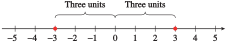
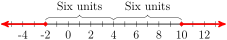
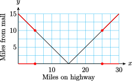

Section 2.5 The Absolute Value Function
Subsection Introduction
The absolute value function is used to model problems involving distance. Recall that the absolute value of a number gives the distance from the origin to that number on the number line.
Distance and Absolute Value.
The distance between two points \(x\) and \(a\) is given by \(\abs{x - a}\text{.}\)
For example, the equation \(\abs{x - 2} = 6\) means "the distance between \(x\) and \(2\) is \(6\) units." The number \(x\) could be to the left or the right of \(2\) on the number line. Thus, the equation has two solutions, \(8\) and \(-4\text{,}\) as shown below.

Checkpoint 2.75. QuickCheck 1.
Example 2.76.
Write each statement using absolute value notation. Illustrate the solutions on a number line.
\(x\) is three units from the origin.
\(p\) is two units from \(5\text{.}\)
\(a\) is within four units of \(-2\text{.}\)
First, restate each statement in terms of distance.
-
The distance between \(x\) and the origin is three units, or \(\abs{x} = 3\text{.}\) Thus, \(x\) can be \(3\) or \(-3\text{.}\)
 -
The distance between \(p\) and \(5\) is two units, or \(\abs{p - 5} = 2\text{.}\) If we count two units on either side of \(5\text{,}\) we see that \(p\) can be \(3\) or \(7\text{.}\)

-
The distance between \(a\) and \(-2\) is less than four units, or \(\abs{a - (-2)} \lt 4\text{,}\) or \(\abs{a + 2} \lt 4\text{.}\) Count four units on either side of \(-2\text{,}\) to find \(-6\) and \(2\text{.}\) Then \(a\) is between \(-6\) and \(2\text{,}\) or \(-6 \lt a \lt 2\text{.}\)

Checkpoint 2.77. QuickCheck 2.
The notation \(|x-3|=5\) means
\(x\) is 3 units bigger than 5.
the distance between \(x\) and 5 is 3 units.
5 and 3 are \(x\) units apart.
the distance between \(x\) and 3 is 5 units.
Checkpoint 2.78. Practice 1.
Write each statement using absolute value notation; then illustrate the solutions on a number line.
-
\(x\) is five units away from \(-3\text{.}\)
\(=\)
-
\(x\) is at least six units away from \(4\text{.}\)
\(\ge\)
Number lines:
- 
Subsection Absolute Value Equations
We can use distances on a number line to solve simple equations such as
First, we factor out the coefficient of \(x\text{,}\) to get \(\abs{3(x - 2)} = 9\text{.}\) Because of the multiplicative property of the absolute value, namely that \(\abs{ab} = \abs{a}\abs{b}\text{,}\) we can write the left side as
which tells us that the distance between \(x\) and \(2\) is \(3\) units, so the solutions are \(x = -1\) and \(x = 5\text{.}\)
Alternatively, we can use graphs when working with absolute values. For example, we know that the simple equation \(\abs{x} = 5\) has two solutions, \(x = 5\) and \(x = -5\text{.}\)
In fact, we can see from the graph at right that the equation \(\abs{x} = k\) has two solutions if \(k \gt 0\text{,}\) one solution if \(k = 0\text{,}\) and no solution if \(k \lt 0\text{.}\)

Checkpoint 2.79. QuickCheck 3.
Which statement is true?
The graph of \(y=|2x-8|\) has no negative inputs.
The equation \(|2x-8|=-4\) has two solutions.
Depending on \(x,~|2x-8|\) can equal \(2x-8\) or \(8-2x\text{.}\)
The graph of \(y=|2x-8|\) is a straight line.
Example 2.80.
Use a graph of \(y = \abs{3x - 6}\) to solve the equation \(\abs{3x - 6} = 9\text{.}\)
Use a graph of \(y = \abs{3x - 6}\) to solve the equation \(\abs{3x - 6} = -2\text{.}\)

-
The graph shows the graphs of \(y = \abs{3x - 6}\) and \(y = 9\text{.}\) We see that there are two points on the graph of \(y = \abs{3x - 6}\) that have \(y = 9\text{,}\) and those points have \(x\)-coordinates \(x = -1\) and \(x = 5\text{.}\) We can verify algebraically that the solutions are \(-1\) and \(5\text{.}\)
\begin{equation*} \begin{aligned}[t] x \amp = \alert{-1}\text{: } ~ ~ \abs{3(\alert{-1}) - 6} = \abs{-9} = 9\\ x \amp = \alert{5}\text{: } ~ ~ \abs{3(\alert{5}) - 6} = \abs{9} = 9 \end{aligned} \end{equation*} There are no points on the graph of \(y = \abs{3x - 6}\) with \(y = -2\text{,}\) so the equation \(\abs{3x - 6} = -2\) has no solutions.
Technology 2.81. Solving Absolute Value Equations.
We can use a graphing calculator to solve the equations in Example 2.80.
The graph shows the graphs of \(Y_1 = \text{abs}(3X - 6)\) and \(Y_2 = 9\) in the window
We use the Trace or the intersect feature to locate the intersection points at \((-1, 9)\) and \((5, 9)\text{.}\)

Checkpoint 2.82. Practice 2.


A graph for part (b):
To solve an absolute value equation algebraically, we use the definition of absolute value.
Example 2.83.
Solve the equation \(\abs{3x - 6} = 9\) algebraically.
We write the piecewise definition of \(\abs{3x - 6}\text{.}\)
Thus, the absolute value equation \(\abs{3x - 6} = 9\) is equivalent to two regular equations:
or, by simplifying the second equation,
Solving these two equations gives us the same solutions we found in Example 2.80, namely \(x = 5\) and \(-1\text{.}\)
In general, we have the following strategy for solving absolute value equations.
Absolute Value Equations.
The equation
is equivalent to
Checkpoint 2.84. Practice 3.
Checkpoint 2.85. Pause and Reflect.
Explain how the equation \(|ax+b|=c\) can have two solutions, one solution, or no solutions.
Subsection Absolute Value Inequalities
We can also use graphs to solve absolute value inequalities. Look again at the graph of \(y = \abs{3x - 6}\) in figure (a) below.

Because of the V-shape of the graph, all points with \(y\)-values less than \(9\) lie between the two solutions of \(~\abs{3x - 6} = 9~\text{,}\) that is, between \(-1\) and \(5\text{.}\) Thus, the solutions of the inequality \(~\abs{3x - 6} \lt 9~\) are \(-1 \lt x \lt 5\text{.}\) (In the Homework Problems, you will be asked to show this algebraically.)
On the other hand, to solve the inequality \(~\abs{3x - 6} \gt 9~\text{,}\) we look for points on the graph with \(y\)-values greater than \(9\text{.}\) In figure (b), we see that these points have \(x\)-values outside the interval between \(-1\) and \(5\text{.}\) In other words, the solutions of the inequality \(~\abs{3x - 6} \gt 9~\) are \(x \lt -1\) or \(x \gt 5\text{.}\)
Thus, we can solve an absolute value inequality by first solving the related equation.
Absolute Value Inequalities.
Suppose the solutions of the equation \(\abs{ax+b}=c\) are \(r\) and \(s\text{,}\) with \(r \lt s\text{.}\) Then
The solutions of \(~\abs{ax+b} \lt c~\) are
\begin{equation*} r \lt x \lt s \end{equation*}The solutions of \(~\abs{ax+b} \gt c~\) are
\begin{equation*} x \lt r ~~\text{ or }~~ x \gt s \end{equation*}
Checkpoint 2.86. QuickCheck 4.
Example 2.87.
Solve \(~\abs{4x - 15} \lt 0.01\)
First, we solve the equation \(~\abs{4x - 15} = 0.01\text{.}\) There are two cases:
Because the inequality symbol is \(\lt\text{,}\) the solutions of the inequality are between these two values: \(3.7475 \lt x \lt 3.7525\text{.}\) In interval notation, the solutions are \((3.7475, 3.7525)\text{.}\)
Checkpoint 2.88. Practice 4.
Subsection Using the Absolute Value in Modeling
In the next Example, we use the absolute value function to model a problem about distances.
Example 2.89.
Marlene is driving to a new outlet mall on Highway 17. There is a gas station at Marlene's on-ramp, where she buys gas and resets her odometer to zero before getting on the highway. The mall is only 15 miles from Marlene’s on-ramp, but she mistakenly drives past the mall and continues down the highway. Marlene's distance from the mall is a function of how far she has driven on Highway 17.

Make a table of values showing how far Marlene has driven on Highway 17 and how far she is from the mall.
Make a graph of Marlene’s distance from the mall versus the number of miles she has driven on the highway. Which of the basic graphs from Section 2.2 does your graph most resemble?
Find a piecewise defined formula that describes Marlene’s distance from the mall as a function of the distance she has driven on the highway.
-
Marlene gets closer to the mall for each mile that she has driven on the highway until she has driven 15 miles, and after that she gets farther from the mall.
Miles on highway \(0\) \(5\) \(10\) \(15\) \(20\) \(25\) \(30\) Miles from mall \(15\) \(10\) \(5\) \(0\) \(5\) \(10\) \(15\) -
We plot the points in the table to obtain the graph shown below. This graph looks like the absolute value function defined in Section 2.2, except that the vertex is the point \((15, 0)\) instead of the origin.

-
Let \(x\) represent the number of miles on the highway and \(f (x)\) the number of miles from the mall. For \(x\)-values less than \(15\text{,}\) the graph is a straight line with slope \(-1\) and \(y\)-intercept at \((0, 15)\text{,}\) so its equation is \(y = -x + 15\text{.}\) Thus,
\begin{equation*} f (x) = -x + 15~~~ \text{ when } ~~~0 \le x \lt 15 \end{equation*}On the other hand, when \(x \ge 15\text{,}\) the graph of \(f\) is a straight line with slope \(1\) that passes through the point \((15, 0)\text{.}\) The point-slope form of this line is
\begin{equation*} y = 0 + 1(x - 15) \end{equation*}so \(y = x - 15\text{.}\) Thus,
\begin{equation*} f (x) = x - 15~~~ \text{ when }~~~ x \ge 15 \end{equation*}Combining the two pieces, we obtain
\begin{equation*} f (x) = \begin{cases} -x + 15~~~ \amp \text{when }~~~ 0\le x\lt 15\\ x - 15~~~ \amp \text{when }~~~ x\ge 15 \end{cases} \end{equation*}The graph of \(f (x)\) is a part of the graph of \(y = \abs{x - 15}\text{.}\) If we think of the highway as a portion of the real number line, with Marlene’s on-ramp located at the origin, then the outlet mall is located at \(15\text{.}\) Marlene's coordinate as she drives along the highway is \(x\text{,}\) and the distance from Marlene to the mall is given by \(f (x) = \abs{x - 15}\text{.}\)
Checkpoint 2.90. Practice 5.
-
Use the graph above from the previous example to determine how far Marlene has driven when she is within 5 miles of the mall. Write and solve an absolute value inequality to verify your answer.
Inequality: \(\lt\) Note: Use “abs(x)” to get \(|x|\text{.}\)
Solution:
-
Write and solve an absolute value inequality to determine how far Marlene has driven when she is at least \(10\) miles from the mall.
Inequality: \(\ge\) Note: Use “abs(x)” to get \(|x|\text{.}\)
Solution:
\(\left|x-15\right|\)
\(5\)
\(10 < x < 20\)
\(\left|x-15\right|\)
\(10\)
\(x\le 5\hbox{ or }x\ge 25\)
-
\(\abs{x-15} \lt 5\text{;}\) \(~10 \lt x \lt 20\)
A graph is below.
-
\(\abs{x-15} \ge 10\text{;}\) \(~x\le 5~\) or \(~x\ge25\)
A graph is below.
Graphs are below.

- 
Subsection Measurement Error
If you weigh a sample in chemistry lab, the scale’s digital readout might show \(6.0\) grams. But it is unlikely that the sample weighs exactly \(6\) grams; there is always some error in measured values.
Because the scale shows the weight as \(6.0\) grams, we know that the true weight of the sample must be between \(5.95\) grams and \(6.05\) grams: If the weight were less than \(5.95\) grams, the scale would round down to \(5.9\) grams, and if the weight were more than \(6.05\) grams, the scale would round up to \(6.1\) grams. We should report the mass of the sample as \(6 \pm 0.05\) grams, which tells the reader that the error in the measurement is no more than \(0.05\) grams.
We can also describe this measurement error, or error tolerance, using an absolute value inequality. Because the measured mass \(m\) can be no more than \(0.05\) from \(6\text{,}\) we write
Note that the solution of this inequality is \(5.95 \le m \le 6.05\text{.}\)
Example 2.91.
The specifications for a computer chip state that its thickness in millimeters must satisfy \(\abs{t - 0.023} \lt 0.001\text{.}\) What are the acceptable values for the thickness of the chip?
The safe dosage of a new drug is between \(250\) and \(450\) milligrams, inclusive. Write the safe dosage as an error tolerance involving absolute values.
The error tolerance can also be stated as \(t = 0.023 \pm 0.001\) millimeters, so the acceptable values are between \(0.022\) and \(0.024\) millimeters.
-
The safe dosage \(d\) satisfies \(250 \le d \le 450\text{,}\) as shown below.

The center of this interval is \(350\text{,}\) and the endpoints are each \(100\) units from the center. Thus, the safe values are within \(100\) units of \(350\text{,}\) or
\begin{equation*} \abs{d - 350} \le 100 \end{equation*}
Checkpoint 2.92. QuickCheck 5.
Which statement is false?
The equation \(|3x+12|=0 \) has one solution.
The statement \(|T-0.1| \lt 0.05 \) describes an error tolerance of 0.05 units.
\(|mx+b| \lt k \) is equivalent to \(-k \lt mx+b \lt k \text{.}\)
The solutions of \(|3x+12| \gt 6 \) form a closed interval.
Checkpoint 2.93. Practice 6.
The temperature, \(T\text{,}\) in a laboratory must remain between \(9^{\circ}\text{C}\) and \(12^{\circ}\text{C}\text{.}\)
-
Write the error tolerance as an absolute value inequality.
Inequality: \(\lt\) Note: Use “abs(x)” to get \(|x|\text{.}\)
-
For a special experiment, the temperature in degrees celsius must satisfy \(\left|T - 6.7\right| \le 0.03\text{.}\) Give the interval of possible temperatures.
Interval:
Checkpoint 2.94. Pause and Reflect.
What is error tolerance used for, and why do we need it?
Subsection Section Summary
Subsubsection Vocabulary
Look up the definitions of new terms in the Glossary.
Absolute value equation
Absolute value inequality
Error tolerance
Subsubsection CONCEPTS
The absolute value is used to model distance: The distance between two points \(x\) and \(a\) is given by \(\abs{x - a}\text{.}\)
Absolute Value Equations.
The equation
\begin{equation*} \abs{ax + b} = c \hphantom{break} (c \gt 0) \end{equation*}is equivalent to
\begin{equation*} ax + b = c ~~\text{ or }~~ ax + b = -c \end{equation*}Absolute Value Inequalities.
Suppose the solutions of the equation \(\abs{ax+b}=c\) are \(r\) and \(s\text{,}\) with \(r \lt s\text{.}\) Then
The solutions of \(\abs{ax+b} \lt c\) are
\begin{equation*} r \lt x \lt s \end{equation*}
The solutions of \(\abs{ax+b} \gt c\) are
\begin{equation*} x \lt r ~~\text{ or }~~ x \gt s \end{equation*}
The error tolerance \(e\) in a measurement \(M\) can be expressed as \(\abs{x - M}\lt e\text{,}\) or as \(x = M \pm e\text{.}\) Both indicate that \(M - e\lt x\lt M + e\text{.}\)
Subsubsection STUDY QUESTIONS
Write a function that models the distance between \(x\) and a fixed point \(k\) on the number line.
For what values of \(c\) does the equation \(\abs{ax + b} = c\) have one solution? No solution?
If you know that the solutions of \(\abs{ax + b}\lt c\) are \(-3\lt x\lt 6\text{,}\) what are the solutions of \(\abs{ax + b}\gt c\text{?}\)
What is the center of the interval \([220, 238]\text{?}\)
What is the center of the interval \([a, b]\text{?}\)
Subsubsection SKILLS
Practice each skill in the Homework problems listed.
Use absolute value notation to write statements about distance: #1–8
Use graphs to solve absolute value equations and inequalities: #9–12
Solve absolute value equations: #13–24
Solve absolute value inequalities: #25–40
Express error tolerances using absolute value notation: #41–48
Analyze absolute value functions: #49–56
Model problems about distance using the absolute value function: #57–60
Exercises Homework 2.5
Exercise Group.
In Problems 1–8,
Use absolute value notation to write each expression as an equation or an inequality. (It may be helpful to restate each sentence using the word distance.)
Illustrate the solutions on a number line.
1.
\(x\) is six units from the origin.
2.
\(a\) is seven units from the origin.
3.
The distance from \(p\) to \(-3\) is five units.
4.
The distance from \(q\) to \(-7\) is two units.
5.
\(t\) is within three units of \(6\text{.}\)
6.
\(w\) is no more than one unit from \(-5\text{.}\)
7.
\(b\) is at least \(0.5\) unit from \(-1\text{.}\)
8.
\(m\) is more than \(0.1\) unit from \(8\text{.}\)
9.
Graph \(y = \abs{x + 3}\text{.}\) Use your graph to solve the following equations and inequalities.
\(\displaystyle \abs{x + 3} = 2 \)
\(\displaystyle \abs{x+3}\le 4 \)
\(\displaystyle \abs{x+3}\gt 5 \)
10.
Graph \(y = \abs{x -2}\text{.}\) Use your graph to solve the following equations and inequalities.
\(\displaystyle \abs{x-2} = 5 \)
\(\displaystyle \abs{x-2}\lt 8 \)
\(\displaystyle \abs{x-2}\ge 4 \)
11.
Graph \(y = \abs{2x-8}\text{.}\) Use your graph to solve the following equations and inequalities.
\(\displaystyle \abs{2x-8} = 0 \)
\(\displaystyle \abs{2x-8}=-2 \)
\(\displaystyle \abs{2x-8}\lt -6 \)
12.
Graph \(y = \abs{4x+8}\text{.}\) Use your graph to solve the following equations and inequalities.
\(\displaystyle \abs{4x+8} = 0 \)
\(\displaystyle \abs{4x+8}\lt 0 \)
\(\displaystyle \abs{4x+8}\gt -3 \)
Exercise Group.
For Problems 13-24, solve.
13.
\(\abs{2x-1}=4 \)
14.
\(\abs{3x-1}=5 \)
15.
\(0=\abs{7+3q} \)
16.
\(\abs{-11-5t}=0 \)
17.
\(4=\dfrac{\abs{b+2}}{3} \)
18.
\(6\abs{n+2}=9 \)
19.
\(\abs{2(w-7)}=1 \)
20.
\(2=\abs{\dfrac{a-4}{5}} \)
21.
\(\abs{c-2}+3=1 \)
22.
\(5=4-\abs{h+3} \)
23.
\(-7=\abs{2m+3} \)
24.
\(\abs{5r-3}=-2 \)
Exercise Group.
For Problems 25-36, solve.
25.
\(\abs{2x+6}\lt 3 \)
26.
\(\abs{5-3x}\le 1 \)
27.
\(7\le \abs{3-2d} \)
28.
\(10 \lt \abs{3r+2} \)
29.
\(\abs{6s+15}\gt -3 \)
30.
\(\abs{8b-12}\lt -4 \)
31.
\(\abs{t-1.5}\lt 0.1 \)
32.
\(\abs{z-2.6}\le 0.1 \)
33.
\(\abs{T-3.25}\ge 0.05 \)
34.
\(\abs{P-0.6}\gt 0.01 \)
35.
\(-1\ge \abs{\dfrac{n-3}{2}} \)
36.
\(-0.1\le \abs{9(p+2)} \)
Exercise Group.
In Problems 37–40, give an interval of possible values for the measurement.
37.
The length, \(l\text{,}\) of a rod is given by \(\abs{l - 4.3}\lt 0.001\text{,}\) in centimeters.
38.
The mass, \(m\text{,}\) of the device shall be \(\abs{m - 450}\lt 4\text{,}\) in grams.
39.
The candle will burn for \(t\) minutes, where \(\abs{t - 300}\le 50\text{.}\)
40.
The ramp will have angle of inclination \(\alpha\text{,}\) and \(\abs{\alpha - 10\degree}\le 0.5\degree\text{.}\)
Exercise Group.
In Problems 41–44, write the error tolerance using absolute values.
41.
The chemical compound must be maintained at a temperature, \(T\text{,}\) between \(4.7\degree\) and \(5.3\degree\)C.
42.
The diameter, \(d\text{,}\) of the hole shall be in the range of \(24.98\) to \(25.02\) centimeters.
43.
The subject will receive a dosage \(D\) from \(95\) to \(105\) milligrams of the drug.
44.
The pendulum swings out and back in a time period \(t\) between \(0.9995\) and \(1.0005\) seconds.
45.
An electrical component of a high-tech sensor requires \(0.25\) ounce of gold. Assume that the actual amount of gold used, \(g\text{,}\) is not in error by more than \(0.001\) ounce. Write an absolute value inequality for the possible error and show the possible values of \(g\) on a number line.
46.
In a pasteurization process, milk is to be irradiated for \(10\) seconds. The actual period \(t\) of irradiation cannot be off by more than \(0.8\) second. Write an absolute value inequality for the possible error and show the possible values of \(t\) on a number line.
47.
In a lab assignment, a student reports that a chemical reaction required \(200\) minutes to complete. Let \(t\) represent the actual time of the reaction.
Write an absolute value inequality for \(t\text{,}\) assuming that the student rounded his answer to the nearest \(100\) minutes. Give the smallest and largest possible value for \(t\text{.}\)
Write an absolute value inequality for \(t\text{,}\) assuming that the student rounded his answer to the nearest minute. Give the smallest and largest possible value for \(t\text{.}\)
Write an absolute value inequality for \(t\text{,}\) assuming that the student rounded his answer to the nearest \(0.1\) minute. Give the smallest and largest possible value for \(t\text{.}\)
What is the shortest time that would round to \(200\) minutes? The greatest time?
48.
An espresso machine has a square metal plate. The side of the plate is \(2\pm 0.01\) cm.
Write an absolute value inequality for the length of the side, \(x\text{.}\) Give the smallest and largest possible value for s.
Compute the smallest and largest possible area of the plate, including units.
Write an absolute value inequality for the area, \(A\text{.}\)
49.
Write the piecewise definition for \(\abs{3x - 6}\text{.}\)
Use your answer to part (a) to write two inequalities that together are equivalent to \(\abs{3x - 6}\lt 9\text{.}\)
Solve the inequalities in part (b) and check that the solutions agree with the solutions of \(\abs{3x - 6}\lt 9\text{.}\)
Show that \(\abs{3x - 6}\lt 9\) is equivalent to the compound inequality \(-9\lt 3x - 6\lt 9\text{.}\)
50.
Write the piecewise definition for \(\abs{3x - 6}\text{.}\)
Use your answer to part (a) to write two inequalities that together are equivalent to \(\abs{3x - 6}\gt 9\text{.}\)
Solve the inequalities in part (b) and check that the solutions agree with the solutions of \(\abs{3x - 6}\gt 9\text{.}\)
Show that \(\abs{3x - 6}\gt 9\) is equivalent to the compound inequality \(3x - 6\lt -9~\) or \(~3x-6\gt 9\text{.}\)
51.
Write the piecewise definition for \(\abs{2x+5}\text{.}\)
Use your answer to part (a) to write two inequalities that together are equivalent to \(\abs{2x+5}\gt 7\text{.}\)
Solve the inequalities in part (b) and check that the solutions agree with the solutions of \(\abs{2x+5}\gt 7\text{.}\)
Show that \(\abs{2x+5}\gt 7\) is equivalent to the compound inequality \(2x+5\lt -7~\) or \(~2x+5\gt 7\text{.}\)
52.
Write the piecewise definition for \(\abs{2x+5}\text{.}\)
Use your answer to part (a) to write two inequalities that together are equivalent to \(\abs{2x+5}\lt 7\text{.}\)
Solve the inequalities in part (b) and check that the solutions agree with the solutions of \(\abs{2x+5}\lt 7\text{.}\)
Show that \(\abs{2x+5}\lt 7\) is equivalent to the compound inequality \(-7\lt 2x+5\lt 7\text{.}\)
Exercise Group.
For Problems 53–56, graph the function and answer the questions.
53.
\(f (x) = \abs{x + 4} + \abs{x - 4}\)
Using your graph, write a piecewise formula for \(f (x)\text{.}\)
Experiment by graphing \(g(x) = \abs{x + p} + \abs{x - q}\) for different positive values of \(p\) and \(q\text{.}\) Make a conjecture about how the graph depends on \(p\) and \(q\text{.}\)
Write a piecewise formula for \(g(x) = \abs{x + p} + \abs{x - q}\text{.}\)
54.
\(f (x) = \abs{x + 4} - \abs{x - 4}\)
Using your graph, write a piecewise formula for \(f (x)\text{.}\)
Experiment by graphing \(g(x) = \abs{x + p} - \abs{x - q}\) for different positive values of \(p\) and \(q\text{.}\) Make a conjecture about how the graph depends on \(p\) and \(q\text{.}\)
55.
\(f (x) = \abs{x + 4} +\abs{x} + \abs{x - 4}\)
Using your graph, write a piecewise formula for \(f (x)\text{.}\)
What is the minimum value of \(f (x)\text{?}\)
If \(p, q \ge 0\text{,}\) what is the minimum value of \(g(x) = \abs{x + p}+\abs{x} + \abs{x - q}\text{?}\)
56.
\(f(x) = \abs{x + 4} -\abs{x}+ \abs{x - 4}\)
Using your graph, write a piecewise formula for \(f (x)\text{.}\)
What is the minimum value of \(f (x)\text{?}\)
If \(p, q \ge 0\text{,}\) what is the minimum value of \(g(x) = \abs{x + p}-\abs{x} + \abs{x - q}\text{?}\)
Exercise Group.
Problems 57–60 use the absolute value function to model distance. Use the strategy outlined in Problems 57 and 58 to solve Problems 59 and 60.
57.
A small pottery is setting up a workshop to produce mugs. Three machines are located on a long table, as shown in the figure. The potter must use each machine once in the course of producing a mug. Let \(x\) represent the coordinate of the potter's station.

Write expressions for the distance from the potter's station to each of the machines.
Write a function that gives the sum of the distances from the potter's station to the three machines.
Graph your function for \(-20\le x\le 30\text{.}\) Where should the potter stand in order to minimize the distance she must walk to the machines?
58.
Suppose the pottery in Problem 57 adds a fourth machine to the procedure for producing a mug, located at \(x = 16\) in the figure.
Write and graph a new function for the sum of the potter's distances to the four machines.
Where should the potter stand now to minimize the distance she has to walk while producing a mug?
59.
Richard and Marian are moving to Parkville to take jobs after they graduate. The main road through Parkville runs east and west, crossing a river in the center of town. Richard's job is located \(10\) miles east of the river on the main road, and Marian's job is \(6\) miles west of the river. There is a health club they both like located \(2\) miles east of the river. If they plan to visit the health club every workday, where should Richard and Marian look for an apartment to minimize their total daily driving distance?
60.
Romina's Bakery has just signed contracts to provide baked goods for three new restaurants located on Route 28 outside of town. The Coffee Stop is \(2\) miles north of town center, Sneaky Pete's is \(8\) miles north, and the Sea Shell is \(12\) miles south. Romina wants to open a branch bakery on Route 28 to handle the new business. Where should she locate the bakery in order to minimize the distance she must drive for deliveries?